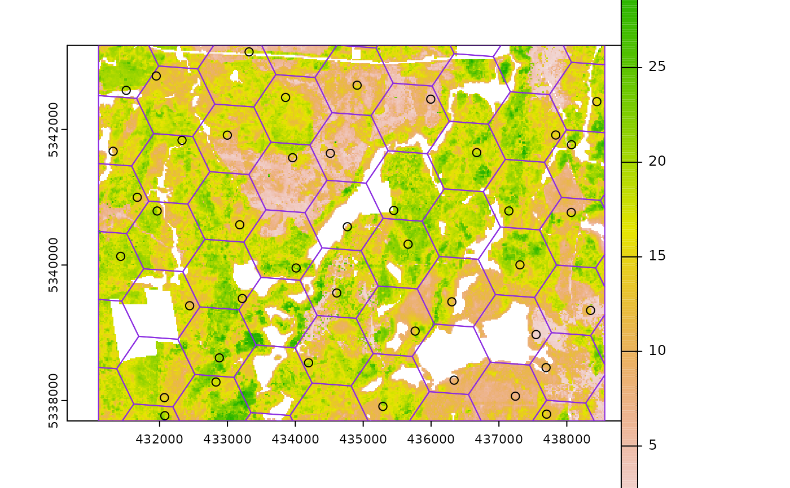
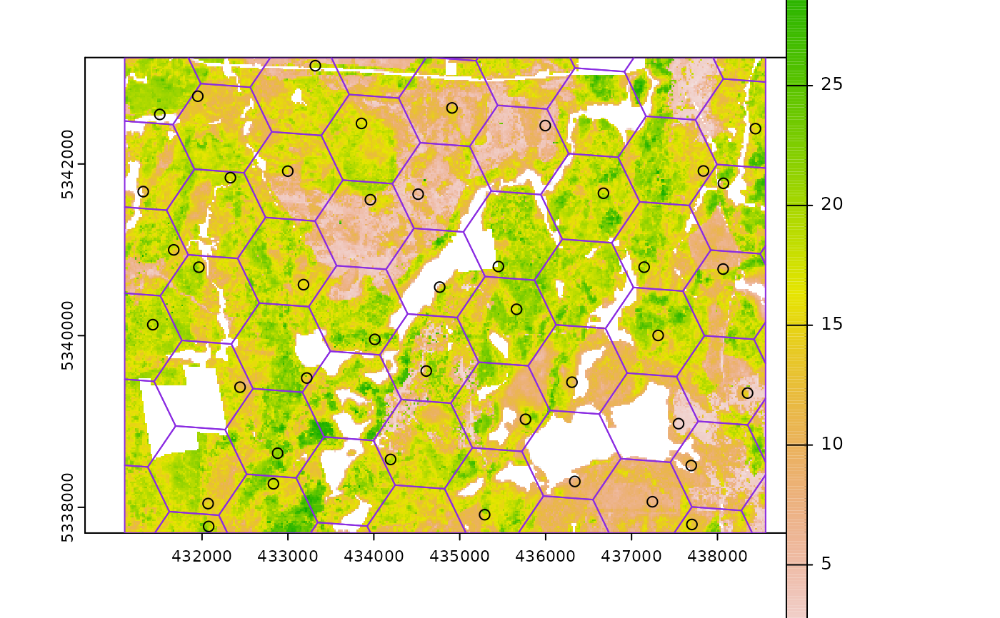

Systematic sampling with random start point and translation within a square or hexagonal tessellation.
Usage
sample_systematic(
raster,
cellsize,
square = TRUE,
location = "centers",
force = FALSE,
access = NULL,
buff_inner = NULL,
buff_outer = NULL,
plot = FALSE,
filename = NULL,
overwrite = FALSE,
details = FALSE,
...
)Arguments
- raster
spatRaster. Raster used to define extent of fishnet grid.
- cellsize
Numeric. Desired cellsize for tessellation.
- square
Logical. Tessellation shape. Default is regular square grid, if
FALSEhexagons are used.- location
Character. Sample location within tessellation.
Default = "centers") returns samples at tessellation centers,"corners"- corners of tessellation are returned,"random"- samples are randomly located within tessellations.- force
Logical. Only applies when
location = "random". IfTRUE, random samples are forced to fall in areas whererasterdoes not haveNAvalues. This will considerably slow processing.- access
sf. Road access network - must be lines.
- buff_inner
Numeric. Inner buffer boundary specifying distance from access where plots cannot be sampled.
- buff_outer
Numeric. Outer buffer boundary specifying distance from access where plots can be sampled.
- plot
Logical. Plots output strata raster with samples.
- filename
Character. Path to write output samples.
- overwrite
Logical. Choice to overwrite existing
filenameif it exists.- details
Logical. If
FALSE(default) output is sf object of systematic samples. IfTRUEreturns a list of sf objects wheretessellationis the tessellation grid for sampling, andsamplesare the systematic samples.- ...
Additional arguments for
st_make_grid. Options includeoffsetto offset grid by providing lower left coordinates.
Note
Specifying location = "random" can result in tessellations with no samples.
This results from raster have NA values at the random location chosen.
Using force = TRUE removes areas of NA from sampling entirely, but
considerably slows processing speeds. Thanks to R. Hijmans for help in debugging and
providing suggestions for this script.
See also
Other sample functions:
sample_ahels(),
sample_balanced(),
sample_clhs(),
sample_existing(),
sample_nc(),
sample_srs(),
sample_strat(),
sample_sys_strat()
Examples
#--- Load raster and access files ---#
r <- system.file("extdata", "mraster.tif", package = "sgsR")
mr <- terra::rast(r)
#--- perform grid sampling ---#
sample_systematic(
raster = mr,
cellsize = 1000
)
#> Simple feature collection with 38 features and 0 fields
#> Geometry type: POINT
#> Dimension: XY
#> Bounding box: xmin: 431207.8 ymin: 5337806 xmax: 438529.7 ymax: 5343146
#> Projected CRS: UTM Zone 17, Northern Hemisphere
#> First 10 features:
#> geometry
#> 1 POINT (438242.2 5337862)
#> 2 POINT (436835.3 5338006)
#> 3 POINT (438386 5339269)
#> 4 POINT (435428.4 5338150)
#> 5 POINT (436979.1 5339413)
#> 6 POINT (437754.4 5340045)
#> 7 POINT (438529.7 5340676)
#> 8 POINT (434021.6 5338294)
#> 9 POINT (434796.9 5338925)
#> 10 POINT (435572.2 5339557)
sample_systematic(
raster = mr,
cellsize = 1000,
location = "corners",
plot = TRUE
)
 #> Simple feature collection with 190 features and 0 fields
#> Geometry type: POINT
#> Dimension: XY
#> Bounding box: xmin: 431522.9 ymin: 5337798 xmax: 438511.8 ymax: 5343184
#> Projected CRS: UTM Zone 17, Northern Hemisphere
#> First 10 features:
#> geometry
#> 1 POINT (437794.6 5342846)
#> 2 POINT (436796.2 5342903)
#> 3 POINT (437794.6 5342846)
#> 4 POINT (435797.8 5342959)
#> 5 POINT (436796.2 5342903)
#> 6 POINT (435797.8 5342959)
#> 7 POINT (433800.9 5343071)
#> 8 POINT (433800.9 5343071)
#> 9 POINT (431804.1 5343184)
#> 10 POINT (431804.1 5343184)
sample_systematic(
raster = mr,
cellsize = 1000,
square = FALSE,
location = "random",
plot = TRUE
)

#> Simple feature collection with 47 features and 0 fields
#> Geometry type: POINT
#> Dimension: XY
#> Bounding box: xmin: 431118.9 ymin: 5337789 xmax: 438533.5 ymax: 5343159
#> Projected CRS: UTM Zone 17, Northern Hemisphere
#> First 10 features:
#> geometry
#> 1 POINT (438236.5 5342925)
#> 2 POINT (437330.8 5343095)
#> 3 POINT (438533.5 5342618)
#> 4 POINT (437566.1 5342263)
#> 5 POINT (436777.5 5343016)
#> 6 POINT (437500.4 5341421)
#> 7 POINT (436979 5341771)
#> 8 POINT (438337.8 5340248)
#> 9 POINT (434968.3 5343159)
#> 10 POINT (435626.3 5341789)
#> Simple feature collection with 190 features and 0 fields
#> Geometry type: POINT
#> Dimension: XY
#> Bounding box: xmin: 431522.9 ymin: 5337798 xmax: 438511.8 ymax: 5343184
#> Projected CRS: UTM Zone 17, Northern Hemisphere
#> First 10 features:
#> geometry
#> 1 POINT (437794.6 5342846)
#> 2 POINT (436796.2 5342903)
#> 3 POINT (437794.6 5342846)
#> 4 POINT (435797.8 5342959)
#> 5 POINT (436796.2 5342903)
#> 6 POINT (435797.8 5342959)
#> 7 POINT (433800.9 5343071)
#> 8 POINT (433800.9 5343071)
#> 9 POINT (431804.1 5343184)
#> 10 POINT (431804.1 5343184)
sample_systematic(
raster = mr,
cellsize = 1000,
square = FALSE,
location = "random",
plot = TRUE
)

#> Simple feature collection with 47 features and 0 fields
#> Geometry type: POINT
#> Dimension: XY
#> Bounding box: xmin: 431118.9 ymin: 5337789 xmax: 438533.5 ymax: 5343159
#> Projected CRS: UTM Zone 17, Northern Hemisphere
#> First 10 features:
#> geometry
#> 1 POINT (438236.5 5342925)
#> 2 POINT (437330.8 5343095)
#> 3 POINT (438533.5 5342618)
#> 4 POINT (437566.1 5342263)
#> 5 POINT (436777.5 5343016)
#> 6 POINT (437500.4 5341421)
#> 7 POINT (436979 5341771)
#> 8 POINT (438337.8 5340248)
#> 9 POINT (434968.3 5343159)
#> 10 POINT (435626.3 5341789)